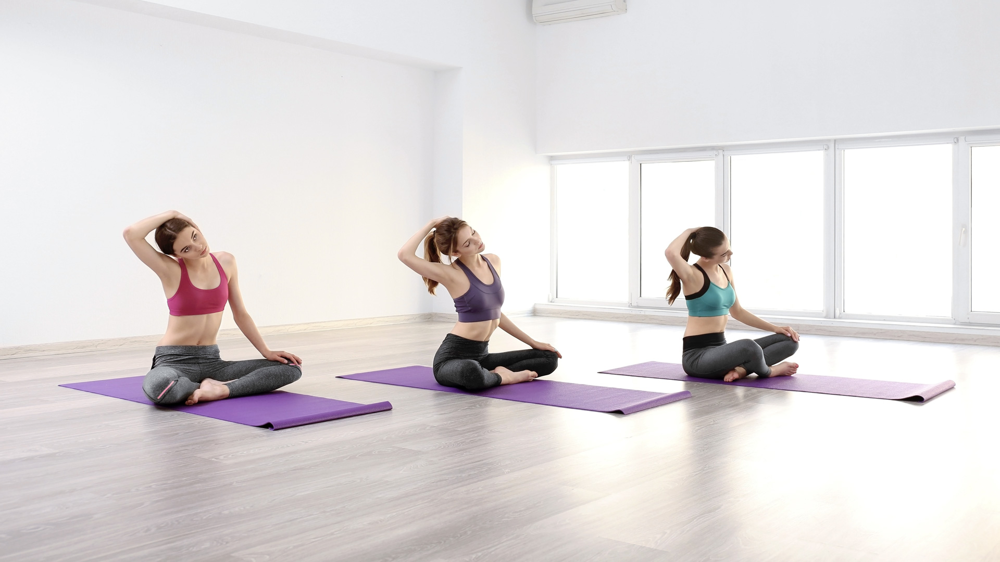

ГРУППОВЫЕ ЗАНЯТИЯ
Разумное тело.
- Пилатес — Польза пилатеса для организма просто неоценима. Занятия, состоящие из бережных и плавных движений, растягивают, укрепляют мышцы, достигая согласованной деятельности всех отделов организма. Важное достоинство программы – бережная работа с позвоночником. Система пилатеса разработана для того, чтобы улучшить все аспекты управления телом, помогая укрепить мышечный корсет, улучшить координацию и баланс движений
- Йога — «Йога — это многогранная система, которая позволяет с помощью постепенной и регулярной практики соединяться со своим внутренним потенциалом. Йога помогает укрепить физическое здоровье, обрести душевное равновесие, активизирует творческое начало.Это один из множества методов духовного развития, посредством развития физического.
- Калланетика- это комплекс статических упражнений, позволяющих хорошо растягивать и сокращать все группы мышц. Свое название получила в честь автора – Каллана Пинкни. При помощи системы упражнений происходит активизация глубоких мышечных групп, что позволяет в короткие сроки достигать прекрасных результатов.
- Stretching- класс направленный, на растяжку всех мышечных групп. Регулярные занятия стретчингом не только делают мышцы более растянутыми и эластичными, но и повышают их тонус, улучшают состояние суставов и увеличивают диапазон движений в них, исправляется осанка, улучшается координация движений, уменьшаются отложения солей, увеличивается снабжение мышц кислородом и питательными веществами.
Силовой и функциональный тренинг.
- Hard Fitnes Функционально-силовая тренировка, с использованием дополнительного оборудования, с элементами CrossFit и Табата тренинга. Для высокого уровня подготовки.
- 90/60/90 Эта программа — представляет собой систему последовательного, комплексного преображения фигуры, улучшает самочувствие и оздоровление организма.
- Torso - Силовой класс направленный на развитие мышц верхней части корпуса, а также мышц брюшного пресса. Рекомендован для любого уровня подготовки.
- Pump power . Класс с использованием мини-штанг, направлен на укрепление мышечных групп вашего тела: спины, груди, ног, плеч, рук и брюшного пресса.
- ABC & stretching. Это силовая тренировка мышц брюшного пресса в комбинации с упражнениями на растягивание основных групп мышц. Прежде всего, такой урок поможет вам подтянуть живот и укрепить мышцы спины.
- Global training – силовой класс для прорабатывания основных мышечных групп, улучшения общего самочувствия ,поднятия тонуса, укрепления мышц.
- Circular treining. Круговая силовая тренировка на основные группы мышц с использованием дополнительного оборудования. Высокоинтенсивный класс смешанного формата. Рекомендуется для любого уровня подготовленности.
- LBT Силовой урок направлен на прорабатывание традиционно проблемных участков женского тела ног- бедер,ягодиц. Повышает выносливость и силу мышц ног, делает ноги более стройными.Рекомендован для любого уровня подготовленности. Продолжительность 50 мин.
- TABATA. Высокоинтенсивная тренировка с использованием разнообразного оборудования. Занятие направлено на развитие основных групп мышц путем поочередного выполнения упражнений за определенный интервал времени. Позволяет сжечь значительное количество калорий, ускоряет метаболизм, позволяет достичь комплексного развития физической формы.
- Body sculpt. Силовой класс направленный на проработку основных групп мышц с использованием различного оборудования. Для любого уровня подготовки. Продолжительность 50 мин.
- Step interval Метод, который позволяет максимально повысить эффективность и сократить время тренировки, был заимствован фитнесом из профессионального спорта. Когда упражнения высокой интенсивности чередуются с коротким отдыхом. Каждый интервал длится не более 10 минут и преследует свою цель. Такой подход позволяет избежать эффекта привыкания и дать полноценную нагрузку на все тело сразу.
- TRX Функциональные тренировки с помощью тренажеров TRX — это работа со своим телом в подвешенном состоянии. Позволяет выполнять множество упражнений, направленных на развитие силы, выносливости, гибкости, равновесия, позволяет самому выбирать уровень интенсивности и нагрузки. Для любого уровня подготовки. Продолжительность 50 мин.
- OMNIA
- Кangoo jumps – последняя тенденция в спорте и фитнесе. Это один из лучших способов зарядится энергией и сбросить лишние килограммы. Главная фишка этого вида фитнеса – ботинки Кangoo jumps. С их помощью ваши тренировки превратятся в веселое времяпрепровождение, но польза от них будет в несколько раз выше!Оснащенные уникальной пружинистой системой, они защищают спину и суставы на 80 %, дают и другие немаловажные результаты! Занятия в них не только позволяют сжечь на 30% калорий больше, чем это происходит при занятиях в обычной обуви, но и позволяют подтянуть ягодицы и живот за рекордное время! Кроме того, тренировки в этих ботинках проходят очень динамично и весело.
- Cycling – это тренировка, которая проводится в закрытом помещении на стационарных велосипедах. Тренировки проходят в очень динамичном ритме. Сайклинг – это не просто кручение педалей, а увлекательное и очень эффективное направление в фитнесе, которое помогает добиться фигуры своей мечты и отличного настроения.
Танцевальные направления.
- Salsa. На занятиях вы освоите кубинскую сальсу и бачату, подготовите себя физически, разовьете гибкость и координацию, обретете способность двигаться свободно и раскрепощенно.
- Afro fusion. Танцевальный класс под бодрящие африканские и ямайские мотивы, которые раскрепощают тело и разгоняют кровь. Снимают напряжение и скованность. Позволяют отвлечь от привычной сдержанности ум и чувства. Вы получите интенсивную аэробную нагрузку, проработаете все группы мышц, улучшите координацию движений. Для любого уровня подготовленности.
- Lady dance – сочетание классической, джазовой, и современной хореографии, растяжки и пластики. Это настоящее искусство соблазнительного танца.
- High heels. Это яркое, экспрессивное и сексуальное направление в современной хореографии, характерной чертой которого, является исполнение танца на высоких каблуках. Помогает развить красивую и уверенную походку на каблуках, а также умение красиво и свободно танцевать на них.